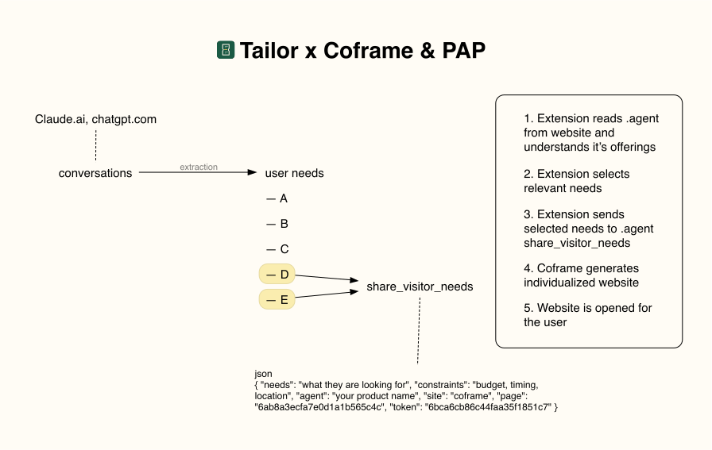

Chrome extension · The Living Internet Build Day, Oct 10 2026
Your ChatGPT and Claude history knows you better than any website does.
Tailor turns it into a private profile, and a Chrome extension rewrites any page for you. Every change cites your words, and code checks every fact.
Owns a PS5
just got a PS5, which TV should I get?
On a TV page, PS5 compatibility moves to the top, with this quote one tap away.
How it works
From your chats to a page that fits
-
Import
Drop in the export file from ChatGPT or Claude. Tailor keeps only your own messages, in this browser.
-
Build a profile
Short facts about you, each with the quote it came from. Keep, edit or delete any of them.
-
Tailor a page
On any site, the extension edits the page in place: what matters to you comes first, with notes that cite you. The original is one click away.
-
Share, if you choose
When a site asks what you need, as coframe.com does, Tailor answers with a few facts you approve first.
Built on four rules
The model proposes. Code decides.
Stays in your browser
Your chat archive and profile live on your device. No account, no server. Only model calls and the sharing you approve leave it.
Code checks every fact
Every number, price, spec and link in a rewrite is checked against the original page. Anything the page does not say is removed and counted.
Every change cites your words
Each change carries the quote it relies on, so you can see why the page changed for you.
Sites are untrusted
A site's reply is shown as plain text, labelled as the site's own words, and never treated as instructions.
What's next
From rewriting pages to sites that build them for you
Today Tailor changes a page in your browser. Next, it tells the site what you need, and the site builds the page for you.

-
Today
Tailor rewrites the page
In your browser, from your profile. On coframe.com it can also share a few needs you approve, and shows the site's reply as the site's own words.
-
Next
The site builds it for you
Tailor reads the site's agent version (.agent), picks the needs that matter there and sends them through share_visitor_needs. Coframe generates an individualized version of the site and Tailor opens it.
-
Later
Your agent acts for you
The Personal Agent Protocol, announced by Sierra and Meta, is meant to let your agent sign in to a site and act with the permissions you grant. Its spec is not published yet. Tailor already works on the same idea: you approve what is shared, and you get a receipt.
Try it
Install from source
Tailor is not in the Chrome Web Store yet. You need Node.js, Chrome and an Anthropic API key.
git clone https://github.com/petr1264k/tailor cd tailor npm install npm run build
- Open
chrome://extensions, turn on Developer mode, click Load unpacked and pick thedistfolder. - Click the Tailor icon and paste your Anthropic API key. It stays in your browser and is only sent to api.anthropic.com.
- Open the profile page and drop in
conversations.jsonfrom your ChatGPT or Claude data export. - Visit any page and press Tailor.
Full details are in the README.